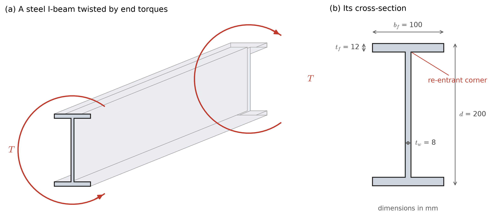
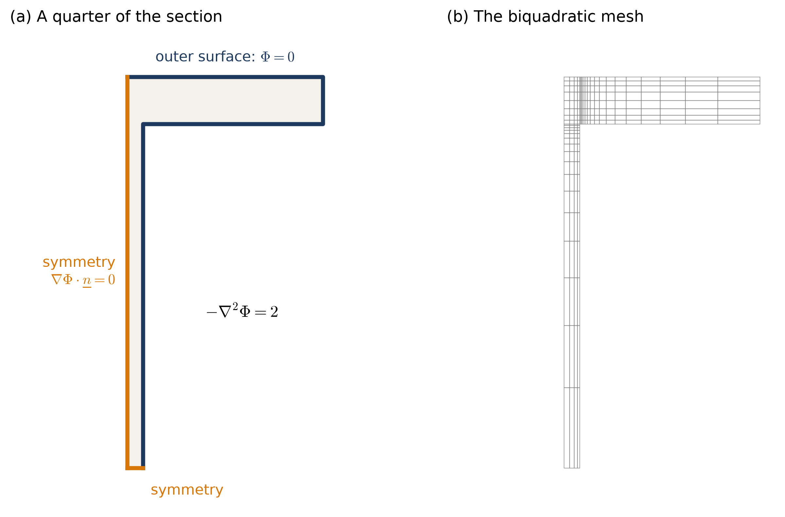
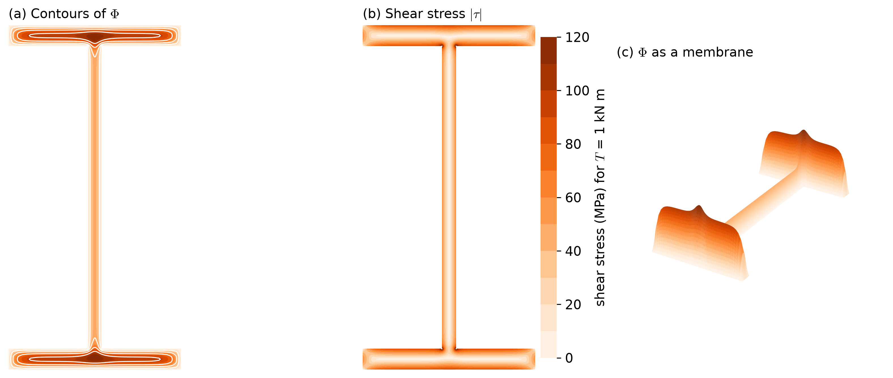
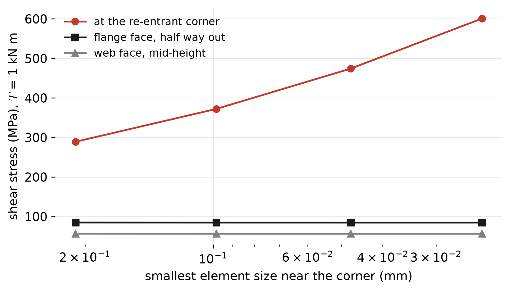
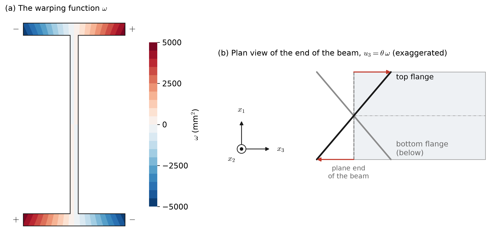

Torsion of an I-Beam, and the Membrane Analogy
This page is one of the application pages for Class 24. It applies the scalar boundary value problem of this course to a steel I-beam twisted about its axis, and computes the quantities a structural engineer needs: the torsion constant, which sets how much the beam twists, and the shear stresses produced by the twisting. The same equation also describes a membrane stretched over a frame, which gives a useful way to picture the result.
The physical problem

I-beams are designed to resist bending, and they are weak in torsion compared to closed sections such as tubes. Torsion still arises, for example in a beam that carries a load that is not centered on its web, and the torsional stiffness of a beam controls its resistance to lateral-torsional buckling. The quantities of interest are
- the torsion constant \(J\), which relates the torque to the angle of twist per unit length, \(\theta = T/(GJ)\), where \(G\) is the shear modulus, and which depends only on the shape of the cross-section; and
- the shear stresses in the cross-section, which must remain below the yield stress of the steel.
The quantities and their units
| quantity | symbol | units | role in the boundary value problem |
|---|---|---|---|
| Prandtl stress function | \(\phi\) | N/mm | the unknown \(u\), as \(\Phi = \phi/(G\theta)\) |
| shear modulus | \(G\) | MPa | 79,300 for steel |
| twist per unit length | \(\theta\) | rad/mm | |
| torque | \(T\) | N·mm | |
| torsion constant | \(J\) | mm⁴ | a property of the shape of the section, computed as a domain integral |
| shear stresses | \(\tau_{xz}\), \(\tau_{yz}\) | MPa | the components of \(\nabla\phi\), rotated by 90° |
The governing equation
In Saint-Venant’s theory of torsion, each cross-section of a long prismatic bar rotates about the axis and may warp out of its plane, but does not distort in its plane. The only stresses are the two shear stresses \(\tau_{xz}\) and \(\tau_{yz}\) acting on the cross-section. Prandtl showed that both can be written in terms of a single stress function \(\phi(x,y)\),
\[ \tau_{xz} = \frac{\partial\phi}{\partial y}, \qquad \tau_{yz} = -\frac{\partial\phi}{\partial x}. \]
With only these two stresses, which are the same at every cross-section, equilibrium reduces to a balance of forces along the bar, \(\partial\tau_{xz}/\partial x + \partial\tau_{yz}/\partial y = 0\), so that the shear stress behaves like the flow of an incompressible fluid in the cross-section: whatever flows into a small region also flows out. The stress function satisfies this for any \(\phi\), since the left side becomes \(\partial^2\phi/\partial x\,\partial y - \partial^2\phi/\partial y\,\partial x = 0\). Equilibrium alone is not enough, however, since not every set of stresses in equilibrium can occur in a real bar. The stresses deform the material according to Hooke’s law, which here gives the shear strains \(\gamma_{xz} = \tau_{xz}/G\) and \(\gamma_{yz} = \tau_{yz}/G\), and these strains must come from an actual displacement of the bar, in which neighboring pieces of material stay joined, with no gaps or overlaps. This requirement is called compatibility. In Saint-Venant’s theory, each cross-section rotates by \(\theta\) per unit length along the bar and warps out of its plane by an amount \(\theta\,\omega(x, y)\), where \(\omega\) is the warping function described under the quantities of interest, so the shear strains are
\[ \gamma_{xz} = \theta\left(\frac{\partial\omega}{\partial x} - y\right), \qquad \gamma_{yz} = \theta\left(\frac{\partial\omega}{\partial y} + x\right). \]
The warping is not known in advance, but it can be removed: differentiating the first strain with respect to \(y\) and the second with respect to \(x\), and subtracting, gives
\[ \frac{\partial\gamma_{yz}}{\partial x} - \frac{\partial\gamma_{xz}}{\partial y} = 2\theta , \]
since the two mixed derivatives of \(\omega\) are equal. Strains that do not satisfy this condition cannot be fitted together into one continuous displacement. Substituting the strains given by the stress function, \(\gamma_{xz} = (1/G)\,\partial\phi/\partial y\) and \(\gamma_{yz} = -(1/G)\,\partial\phi/\partial x\), then gives
\[ -\nabla^2\phi = 2G\theta \qquad\Longleftrightarrow\qquad -\phi_{,ii} = 2G\theta \qquad \text{in the cross-section}, \]
and the condition that the outer surface of the bar carries no load gives \(\phi = 0\) on the boundary of a solid cross-section; sections with holes are treated in a note under the quantities of interest. The torque carried by the stresses is
\[ T = 2\int_A \phi\;dA , \]
which is derived below, under the quantities of interest.
Since the problem is linear, \(\phi\) is proportional to \(G\theta\), and it is convenient to solve it once with \(G\theta\) removed. Writing \(\phi = G\theta\,\Phi\),
\[ -\nabla^2\Phi = 2 \ \text{ in } A, \qquad \Phi = 0 \ \text{ on the boundary}. \]
The normalized stress function \(\Phi\), in mm², contains no torque, twist, or material property, so it depends only on the shape of the cross-section. This is the Poisson equation used throughout this course with \(u = \Phi\), \(\underline{\underline{\kappa}} = 1\), and \(f = 2\). Once \(\Phi\) is known, the torsion constant and the shear stresses follow from it,
\[ J = 2\int_A \Phi\;dA, \qquad \tau = \frac{T}{J}\,|\nabla\Phi| , \]
where \(J\) is defined, and the first formula derived, under the quantities of interest. The contours of \(\Phi\) are the lines along which the shear stress acts, and the shear stress is largest where the contours are closest together.
Boundary conditions

The section is symmetric about both of its axes, and so is \(\Phi\), so only a quarter is modeled, as shown in Figure 2.
- The outer surface of the section, including the faces of the web and the flange and the end of the flange: \(\Phi = 0\), a Dirichlet condition.
- The two axes of symmetry: \(\nabla\Phi\cdot\underline{n} = 0\), a Neumann condition with zero data, which requires nothing to be imposed.
The solution

Figure 3 shows that, in each thin plate of the section, the contours of \(\Phi\) run along the plate and turn around at its ends. The shear stress therefore flows around the edge of each plate, in one direction on one face and in the opposite direction on the other, and is largest on the faces. At the re-entrant corners, the contours crowd together and the stress becomes very large.
Quantities of interest
What the torsion constant is
The torsion constant is a property of the shape of the cross-section,
\[ J = \int_A \left(x^2 + y^2\right) dA - \int_A |\nabla\omega|^2\;dA , \]
where the first term is the polar moment of inertia and \(\omega(x, y)\), in mm², is the warping function, the solution of
\[ -\nabla^2\omega = 0 \ \text{ in } A, \qquad \nabla\omega\cdot\underline{n} = y\,n_x - x\,n_y \ \text{ on the boundary}. \]
Only the shape of the section enters this problem, so \(J\) involves no torque, twist, or material property. The polar moment is the torsion constant that the section would have if it could not warp out of its plane, which is the case for a circular shaft and is what the frame elements of the appendix assume. The second term is the stiffness lost because the section is free to warp. For I-beams (typically called ‘’W-Sections’’), it removes a substantial amount of the stiffness, amounting to a 99.5% reduction of the polar moment for this particular geometry. Both \(\omega\) and this formula are derived under the warping function.
The torsion constant is used through the stiffness of a bar in twisting,
\[ T = G\,J\,\theta , \]
or, equivalently, through the strain energy stored in each unit length of the twisted bar, \(U = \tfrac{1}{2}\,G\,J\,\theta^2\), in the same way that a bent beam stores \(\tfrac{1}{2}EI\kappa^2\). These relations are how \(J\) is used and measured, not what it depends on: doubling the torque doubles the twist, and \(J = T/(G\theta)\) is unchanged. In a frame model, each member resists twisting with a stiffness \(GJ\), as it resists bending with \(EI\) and stretching with \(EA\), and the \(J\) computed on this page is the value used there; see the relation to beam and frame elements.
For a solid section, such as this one, the same number is computed more simply from the stress function, \(J = 2\int_A \Phi\,dA\), where \(\Phi\) is also fixed by the shape of the section alone, through \(-\nabla^2\Phi = 2\) with \(\Phi = 0\) on the boundary. This formula is derived next, and the two ways of computing \(J\) are compared in Table 4.
Computing it from the stress function
This subsection assumes a solid section, whose boundary is a single closed curve \(\Gamma\), as for the I-beam of this page. The extension to sections with holes is given in the note at the end of the subsection.
The torque on a cross-section is the moment of the shear stresses about the axis of the bar,
\[ T = \int_A \left(x\,\tau_{yz} - y\,\tau_{xz}\right) dA . \]
Substituting \(\tau_{xz} = \partial\phi/\partial y\) and \(\tau_{yz} = -\partial\phi/\partial x\) gives
\[ T = -\int_A \left(x\,\frac{\partial\phi}{\partial x} + y\,\frac{\partial\phi}{\partial y}\right) dA = -\int_A x_i\,\phi_{,i}\;dA . \]
The product rule, \(\left(x_i\,\phi\right)_{,i} = x_{i,i}\,\phi + x_i\,\phi_{,i}\), and the divergence theorem then give
\[ \int_A x_i\,\phi_{,i}\;dA = \oint_{\Gamma} \left(\underline{x}\cdot\underline{n}\right)\phi\;d\Gamma - \int_A x_{i,i}\,\phi\;dA . \]
On a free surface, the shear stress must be tangent to the surface, \(\tau_{xz}\,n_x + \tau_{yz}\,n_y = 0\), and with the stresses above this is \(\nabla\phi\cdot\underline{t} = 0\), where \(\underline{t} = (-n_y, n_x)\) is the unit tangent to the boundary. Thus \(\phi\) is constant along the boundary, and since only the derivatives of \(\phi\) give stresses, that constant may be taken as zero. With \(\phi = 0\) on \(\Gamma\), the boundary integral is zero. In two dimensions, \(x_{i,i} = \partial x/\partial x + \partial y/\partial y = 2\), so
\[ T = 2\int_A \phi\;dA . \]
The factor of 2 is the divergence of the position vector in two dimensions, and is not related to the 2 on the right side of \(-\nabla^2\Phi = 2\). Since \(\phi = G\theta\,\Phi\), this gives \(T = G\theta \cdot 2\int_A \Phi\,dA\), and comparing with the definition \(T = G\,J\,\theta\),
\[ J = 2\int_A \Phi\;dA . \]
The integrals \(T = 2\int_A\phi\,dA\) and \(J = 2\int_A\Phi\,dA\) look alike, but they are different quantities: \(\phi\) carries the factor \(G\theta\) and changes with the load, while \(\Phi\) depends only on the shape of the section.
Two checks confirm the formula.
- A circular shaft of radius \(R\) has \(\Phi = (R^2 - r^2)/2\), which satisfies \(-\nabla^2\Phi = 2\) and is zero at \(r = R\). Then \(2\int_A\Phi\,dA = \pi R^4/2\), which is the polar moment of inertia, as expected.
- A thin rectangle of length \(b\) and thickness \(t\) has \(\Phi \approx t^2/4 - y^2\) across its thickness, away from its ends. Then \(2\int_A\Phi\,dA \approx 2\,b\,t^3/6 = b\,t^3/3\), which is the thin-walled formula used below.
The derivation also shows how the torque is shared. The integral splits into a part from \(x\,\partial\phi/\partial x\) and a part from \(y\,\partial\phi/\partial y\), and each contributes exactly \(\int_A\phi\,dA\), so the two stress components carry half of the torque each. In a thin rectangle, the large stresses along the long faces act with a short lever arm, of the order of \(t\). The small stresses that turn around at the short ends act with a long lever arm, of the order of \(b\), and they carry the other half of the torque.
For a section with holes, the boundary consists of the outer boundary \(\Gamma_0\) and the edge \(\Gamma_k\) of each hole \(k\). The stress function is still constant on each of these curves, but only one of the constants can be taken as zero, which is done on the outer boundary, so on the edge of hole \(k\) it takes a value \(\phi_k\) that is not, in general, zero. Each \(\phi_k\) is fixed by an additional condition: the axial displacement must return to the same value after going once around the hole, which requires
\[ \oint_{\Gamma_k} \nabla\Phi\cdot\underline{n}\;d\Gamma = 2A_k , \]
where \(A_k\) is the area of hole \(k\), \(\Phi = \phi/(G\theta)\) as before, and \(\underline{n}\) is the outward normal of the section, which points into the hole. The boundary integral in the derivation is then zero on \(\Gamma_0\), but not on \(\Gamma_k\), where
\[ \oint_{\Gamma_k} \left(\underline{x}\cdot\underline{n}\right)\phi\;d\Gamma = \phi_k \oint_{\Gamma_k} \underline{x}\cdot\underline{n}\;d\Gamma = -2\,\phi_k\,A_k , \]
since the divergence theorem applied to the hole, whose own outward normal is \(-\underline{n}\), gives \(\oint_{\Gamma_k} \underline{x}\cdot\underline{n}\,d\Gamma = -\int_{A_k} x_{i,i}\,dA = -2A_k\). The torque and the torsion constant are then
\[ T = 2\int_A \phi\;dA + 2\sum_k \phi_k\,A_k , \qquad J = 2\int_A \Phi\;dA + 2\sum_k \Phi_k\,A_k . \]
The extra terms are the volumes of flat lids at height \(\phi_k\) over the holes, so the torque is twice the volume under \(\phi\) with each hole covered by its lid.
The constants \(\Phi_k\) are found by superposition. Write
\[ \Phi = \Phi_0 + \sum_k \Phi_k\,\psi_k , \]
where \(\Phi_0\) solves \(-\nabla^2\Phi_0 = 2\) with \(\Phi_0 = 0\) on every boundary curve, and \(\psi_k\) solves \(-\nabla^2\psi_k = 0\) with \(\psi_k = 1\) on \(\Gamma_k\) and \(\psi_k = 0\) on every other boundary curve. Each of these is a problem of this course with Dirichlet conditions only, solved on the same mesh, and for any values of the constants the sum satisfies \(-\nabla^2\Phi = 2\), with \(\Phi = 0\) on \(\Gamma_0\) and \(\Phi = \Phi_k\) on each \(\Gamma_k\). Substituting the sum into the condition for each hole \(j\), and using the weak forms of these problems to replace the boundary integrals by domain integrals,
\[ \oint_{\Gamma_j} \nabla\psi_k\cdot\underline{n}\;d\Gamma = \int_A \nabla\psi_j\cdot\nabla\psi_k\;dA , \qquad \oint_{\Gamma_j} \nabla\Phi_0\cdot\underline{n}\;d\Gamma = -2\int_A \psi_j\;dA , \]
gives one linear equation for each hole,
\[ \sum_k \left(\int_A \nabla\psi_j\cdot\nabla\psi_k\;dA\right)\Phi_k = 2\left(A_j + \int_A \psi_j\;dA\right), \qquad j = 1, 2, \ldots \]
The matrix of this system is symmetric and positive definite, and for a single hole it is one equation,
\[ \Phi_1 = \frac{2\left(A_1 + \int_A \psi_1\;dA\right)}{\int_A |\nabla\psi_1|^2\;dA} . \]
For a thin-walled tube with wall thickness \(t\), enclosing an area \(A_1\) with perimeter \(L\), \(\psi_1\) varies linearly across the wall, so \(\int_A |\nabla\psi_1|^2\,dA \approx L/t\) and \(\int_A \psi_1\,dA\) is small compared with \(A_1\). This gives \(\Phi_1 \approx 2A_1 t/L\) and \(J \approx 2\Phi_1 A_1 = 4A_1^2 t/L\), which is Bredt’s formula for a thin-walled tube.
The membrane page finds the constant in a second way, without superposition, which is why the torsion constant of a tube is computed there from the volume under both the membrane and the boss. The boss is a lid: the hole is filled with elements whose nodes all share one unknown, so that it stays flat, and the source acts on it as well. Adding the equations of the tied nodes gives the vertical equilibrium of the boss, in which the pressure on it balances the pull of the membrane around its edge, and this is the discrete form of the condition above. For the square tube of that page, the two ways give the same \(\Phi_1\) and the same \(J\).
The torsion constant of this section
The torsion constant is computed as \(2\int_A \Phi\,dA\), with the same quadrature used to build the stiffness matrix and multiplied by 4 for the four quarters. With biquadratic elements, \(J\) = 141,323 mm⁴, and refining the mesh twice more changes it by 0.03%. For a torque of 1 kN·m, the beam twists by \(\theta = T/(GJ)\) = 5.1° per meter.
For thin-walled open sections, a common approximation treats each plate as a thin rectangle,
\[ J \approx \sum \frac{b\,t^3}{3} = \frac{2\,b_f t_f^3 + (d - 2t_f)\,t_w^3}{3} = 145\,237\ \text{mm}^4 , \]
which is 2.8% larger than the finite element value. The approximation ignores the ends of each plate, where the stress must turn around and \(\Phi\) falls to zero, which makes it slightly too large.
Shear stresses
The shear stress on the faces of a thin plate of thickness \(t\) is approximately \(\tau = T\,t/J\), which gives Table 2.
| location | finite elements (MPa) | thin-walled estimate \(T\,t/J\) (MPa) |
|---|---|---|
| outer face of a flange, half way out | 84.9 | 84.9 |
| face of the web, half way between the axis and the flange | 56.6 | 56.6 |
| the re-entrant corner | 372, and growing with refinement | — |
Away from the corners, the computed stresses agree with the thin-walled estimate to within a fraction of a percent, and the largest of them is on the faces of the flanges, which are the thickest plates.
The re-entrant corner

Figure 4 shows that the computed stress at the re-entrant corner grows each time the mesh is refined, from 289 MPa to 601 MPa, while the stresses on the faces do not change. The sharp inside corner is a singular point of the exact solution, so the stress there is infinite, and no finite element value at the corner is meaningful. Real rolled sections have a fillet at this corner, with a radius comparable to the thickness of the web, and the stress there is then finite, though larger than on the faces by a factor that depends on the radius of the fillet. To estimate it, one would either include the fillet in the geometry and refine around it, or apply a stress concentration factor from a handbook to the face stress computed here.
Checks
- A problem with a known answer. The torsion constant of a solid rectangle has an exact series solution. For a single 100 mm by 12 mm plate, the series gives \(J\) = 53,244 mm⁴, and the same code gives 52,309 mm⁴ with bilinear elements and 53,242 mm⁴ with biquadratic elements, an error of 0.0034%.
- Refinement. \(J\) and the face stresses change by less than 0.1% when the mesh is refined, while the corner stress does not converge, as expected at a singular point. With bilinear elements on the coarsest mesh, \(J\) = 136,013 mm⁴, 3.8% below the converged value.
- The thin-walled approximation agrees with the computed \(J\) and face stresses to within a few percent, which is the accuracy expected of it.
The membrane analogy
Consider a thin membrane, such as a soap film or a sheet of rubber, stretched with a uniform tension \(S\) (force per unit length) over an opening in a flat plate, and pushed out of the plane by a small uniform pressure \(p\). Its deflection \(w\) satisfies
\[ -S\,\nabla^2 w = p \quad\text{over the opening}, \qquad w = 0 \quad\text{on its edge}, \]
which is the same problem as torsion, with \(w = \tfrac{p}{2S}\,\Phi\). Prandtl noticed this in 1903, and before computers, engineers measured the shapes of soap films blown over openings of the same shape as a cross-section to find torsion constants and stresses. Figure 3 (c) is that soap film. The analogy gives a picture of the result:
- the torque is proportional to the volume under the membrane;
- the shear stress at a point is proportional to the slope of the membrane there; and
- the direction of the shear stress follows the contours of the membrane.
A thin plate can only hold a low, narrow ridge of membrane, which is why an open section such as an I-beam is so much weaker in torsion than a tube of the same material, which covers a large area and holds a large volume.
The membrane problem is also of interest in its own right. Drumheads, pressure-sensing diaphragms, and fabric roof panels under wind load are all described by the same equation, with the deflection, the volume enclosed, and the force per unit length along the supporting edge, \(S\,\nabla w\cdot\underline{n}\), as quantities of interest. That edge force is a boundary flux, and it can be computed from the reactions at the Dirichlet nodes along the edge.
Relation to beam and frame elements
The appendix on beams and frames reduces three-dimensional elasticity to equations along the axis of each member, with \(x\), \(y\), \(z\) here written as \(x_1\), \(x_2\), \(x_3\). One of its unknowns is the twist \(\theta_3(x_3)\) of each cross-section, governed by \(m_3' + C_3 = 0\) with \(m_3 = \mu J\,\theta_3'\), where \(\mu = G\). Its twisting moment, defined in the appendix as \(m_3 = \int_A \left(\sigma_{23}\,x_1 - \sigma_{13}\,x_2\right) dA\), is the torque \(T\) of this page, and \(\theta_3'\) is the twist per unit length \(\theta\), so \(m_3 = \mu J\,\theta_3'\) is \(T = G J \theta\). The two models describe the same rotation of the cross-section, and differ only in whether it warps.
| frame member (appendix) | Saint-Venant torsion (this page) | |
|---|---|---|
| in-plane displacements | \(u_1 = -x_2\,\theta_3\), \(u_2 = x_1\,\theta_3\) | the same, with \(\theta_3 = \theta\,x_3\) |
| axial displacement due to twist | none | \(u_3 = \theta\,\omega(x_1, x_2)\), the warping |
| unknown | \(\theta_3(x_3)\) along the member | \(\Phi(x_1, x_2)\) over the cross-section |
| torsion constant | \(J = \int_A \left(x_1^2 + x_2^2\right) dA = I_1 + I_2\) | \(J = 2\int_A \Phi\;dA\) |
| this I-section | 26,877,227 mm⁴ | 141,323 mm⁴ |
Without warping, the shear stresses \(\sigma_{13} = -\mu\,x_2\,\theta_3'\) and \(\sigma_{23} = \mu\,x_1\,\theta_3'\) act perpendicular to the radius. They are therefore not tangent to the faces of a non-circular section, and the faces are not free of load. Warping removes these stresses, and the polar moment overestimates the torsional stiffness of this I-section by a factor of about 190. The two constants agree only for a circular section, where \(\omega = 0\), as in the first check above.
A frame model therefore uses the Saint-Venant constant: a two-dimensional finite element problem over the cross-section, such as this one, supplies \(J\) to the one-dimensional elements along each member. In the other direction, the frame analysis gives the torque \(m_3\) in each member, and this page turns it into shear stresses, \(\tau = (m_3/J)\,|\nabla\Phi|\). Assumption 2 of the appendix, \(\sigma_{\alpha\beta} = 0\), holds exactly here, since the only stresses are \(\tau_{xz}\) and \(\tau_{yz}\).
The warping function
In Saint-Venant’s theory, the displacements are
\[ u_1 = -\theta\,x_2\,x_3, \qquad u_2 = \theta\,x_1\,x_3, \qquad u_3 = \theta\,\omega(x_1, x_2), \]
which are those of the appendix with \(\theta_3 = \theta\,x_3\), together with an axial displacement proportional to the warping function \(\omega\), in mm². The shear strains then give the stresses
\[ \tau_{xz} = G\theta\left(\frac{\partial\omega}{\partial x_1} - x_2\right), \qquad \tau_{yz} = G\theta\left(\frac{\partial\omega}{\partial x_2} + x_1\right). \]
Equilibrium, \(\partial\tau_{xz}/\partial x_1 + \partial\tau_{yz}/\partial x_2 = 0\), and a load-free outer surface, \(\tau_{xz}\,n_1 + \tau_{yz}\,n_2 = 0\), then give
\[ -\nabla^2\omega = 0 \ \text{ in } A, \qquad \nabla\omega\cdot\underline{n} = x_2\,n_1 - x_1\,n_2 \ \text{ on the boundary}. \]
This is again the same Poisson equation used in this course, now with \(f = 0\) and Neumann data on the whole boundary. As in Class 23, a pure Neumann problem determines \(\omega\) only up to a constant, which here is a rigid axial movement of the section. Its data must also satisfy a compatibility condition, which they do, since \(\oint (x_2\,n_1 - x_1\,n_2)\,d\Gamma = \int_A \left(\partial x_2/\partial x_1 - \partial x_1/\partial x_2\right) dA = 0\). For this section, \(\omega\) is odd in both \(x_1\) and \(x_2\), so the quarter model has \(\omega = 0\) on the two axes of symmetry, which fixes the constant. \(\Phi\) is even in both, which is why its quarter model has zero-flux conditions there instead.
Comparing these stresses with \(\tau_{xz} = G\theta\,\partial\Phi/\partial x_2\) and \(\tau_{yz} = -G\theta\,\partial\Phi/\partial x_1\) gives
\[ \frac{\partial\Phi}{\partial x_2} = \frac{\partial\omega}{\partial x_1} - x_2, \qquad -\frac{\partial\Phi}{\partial x_1} = \frac{\partial\omega}{\partial x_2} + x_1 , \]
so \(\Phi\) and \(\omega\) describe the same stresses, one through a Dirichlet problem and the other through a Neumann problem.
Substituting the stresses into the torque, \(T = \int_A \left(x_1\,\tau_{yz} - x_2\,\tau_{xz}\right) dA = G\,J\,\theta\), gives
\[ J = I_1 + I_2 + \int_A \left(x_1\,\frac{\partial\omega}{\partial x_2} - x_2\,\frac{\partial\omega}{\partial x_1}\right) dA = I_1 + I_2 - \int_A |\nabla\omega|^2\;dA . \]
The second form follows from the weak form of the problem for \(\omega\) with \(\omega\) itself as the weight function, \(\int_A |\nabla\omega|^2\,dA = \oint \omega\left(x_2\,n_1 - x_1\,n_2\right) d\Gamma\), and the divergence theorem. Warping can therefore only reduce the torsion constant below the polar moment, and the polar moment of the appendix is the case \(\omega = 0\).

Figure 5 shows \(\omega\) for this section. Along the mid-lines of the plates, \(\omega \approx x_1 x_2\), which is zero along the web, so the web hardly warps. Each flange instead rotates in its own plane: for a positive twist, one tip of the top flange moves along the beam and the other moves back, and the bottom flange does the opposite. Where this motion is prevented, as at a welded support, each flange must bend in its own plane, which is the source of the additional stiffness noted under the limits of the model.
The two formulations also give a check on the finite element solutions. For each problem, the energy of the solution is \(\Pi = -\int_A \Phi\,dA\) or \(\Pi = -\tfrac{1}{2}\int_A |\nabla\omega|^2\,dA\), and the energy of a finite element solution is never below the exact energy (Class 23). Writing \(\Phi_h\) and \(\omega_h\) for the finite element solutions, this gives
\[ 2\int_A \Phi_h\;dA \;\le\; J \;\le\; I_1 + I_2 - \int_A |\nabla\omega_h|^2\;dA , \]
and Table 4 shows the two approaching the same value from opposite sides.
| nodes in the quarter | \(2\int_A \Phi_h\,dA\) (mm⁴) | \(I_1 + I_2 - \int_A \lvert\nabla\omega_h\rvert^2\,dA\) (mm⁴) |
|---|---|---|
| 985 | 141,107 | 141,602 |
| 3,761 | 141,323 | 141,400 |
| 14,689 | 141,357 | 141,369 |
| 58,049 | 141,362 | 141,365 |
Limits of the model
- Solid sections only. For a section with holes, such as a tube or a box girder, \(\Phi\) takes a different constant value on each boundary, and the constants on the inner boundaries are unknown. They are found from additional conditions, one for each hole, given in the note on sections with holes; a solver that sets \(\Phi = 0\) on every boundary cannot impose them. The membrane page shows one way to impose them, by filling each hole with elements whose nodes all share one unknown, which is Prandtl’s “lid” over the hole.
- Uniform torsion. The theory assumes that the cross-sections are free to warp. Where warping is restrained, for example at a welded support, an I-beam carries additional stresses and is stiffer than this model predicts, because its flanges must bend in their own planes (Figure 5). The frame elements of the appendix do not include this either.
- Linear elasticity. The stresses must remain below yield; beyond that, the stress distribution changes.
- Sharp corners. The model has no fillets, so its corner stresses are not meaningful.
Summary
- Saint-Venant torsion is represented using the Poisson equation with \(u = \Phi\), the normalized Prandtl stress function, \(\underline{\underline{\kappa}} = 1\), and \(f = 2\), with \(\Phi = 0\) on the boundary of a solid section.
- The torsion constant is a property of the shape of the section, the polar moment less the stiffness lost to warping, \(J = \int_A (x^2 + y^2)\,dA - \int_A|\nabla\omega|^2\,dA\); for a solid section, it is computed most simply as \(2\int_A\Phi\,dA\), which converges quickly, and the shear stresses are proportional to \(|\nabla\Phi|\).
- Symmetry reduces the model to a quarter, with zero-flux conditions on the axes of symmetry.
- The stress at a sharp re-entrant corner is singular and keeps growing with refinement, while the stresses on the faces converge.
- A membrane stretched over the same shape and inflated by a uniform pressure takes the shape of \(\Phi\), which relates torque to volume and stress to slope; the membrane page treats the membrane in its own right.
- Beam and frame elements twist each cross-section in the same way but do not let it warp, so their \(J\) is the polar moment, which is far too stiff for an open section; the \(J\) computed here is the one a frame model needs.
- The warping function \(\omega\) solves the same equation with Neumann data, and gives \(J = I_1 + I_2 - \int_A|\nabla\omega|^2\,dA\); computed with finite elements, the two formulations bound \(J\) from below and from above.